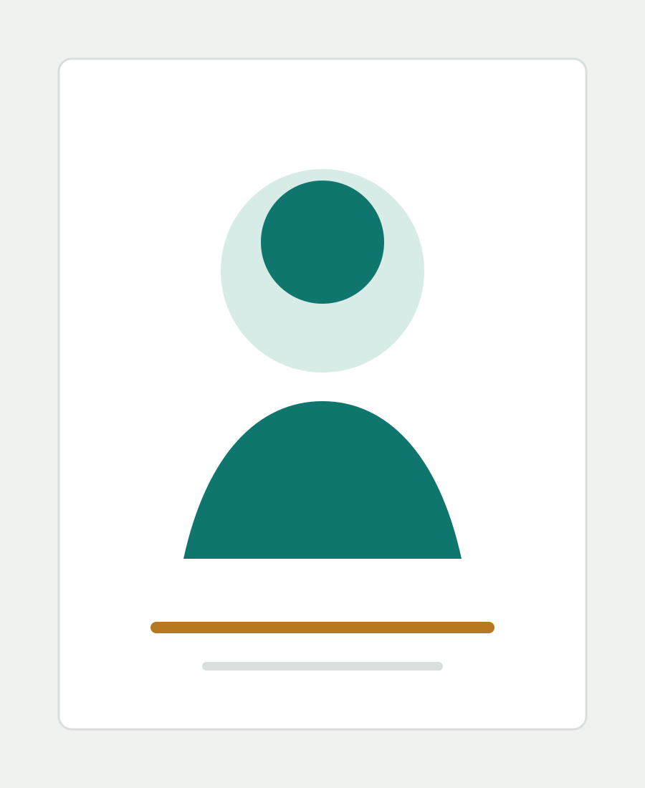
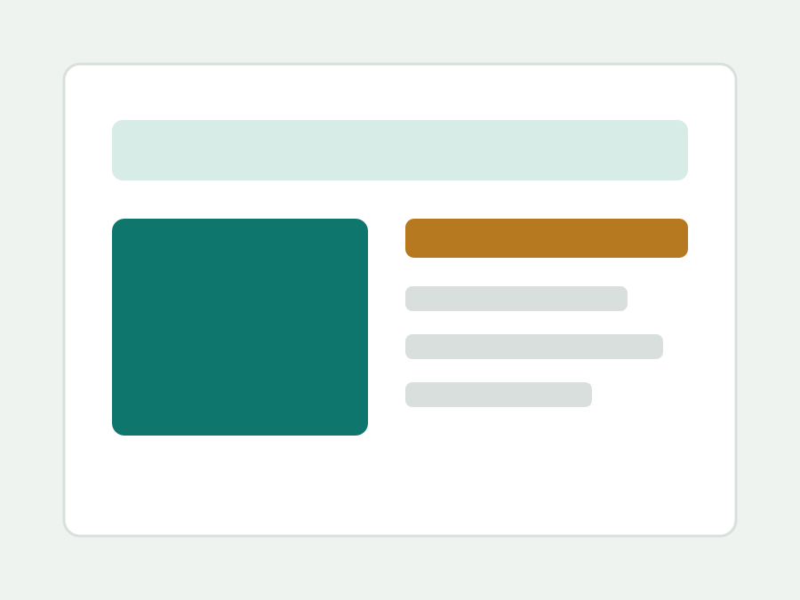

Research Area One
Add a one or two sentence summary of your first area of focus.
Personal website
A clean starter homepage for research, projects, writing, and professional updates. Replace this line with a short personal introduction.

About
Write a concise bio here: your current role, institution, interests, and the type of work you want visitors to notice first.
This template is intentionally minimal. Swap in your own photo, CV link, social links, publications, projects, and any notes you want to keep visible.
Research
Add a one or two sentence summary of your first area of focus.
Add keywords, themes, collaborators, or a brief description.
Use this for papers, reading notes, or future research directions.
Projects

Describe the problem, your role, and the outcome. Add links when ready.
Use this repeated block for portfolio items, tools, demos, or papers.
Experience
Add institution, lab, company, or study information here.
Add internships, projects, awards, publications, or teaching work.
Contact
Add your preferred email, social profiles, CV, and calendar link here when ready.